Weddings
A Lake Annecy Wedding in Talloires
11 December 2018

A spring wedding on the shores of Lake Annecy, beneath the snow-capped peaks of the French Alps.
The couple married at the historic L'Abbaye de Talloires, the bride in a delicate long-sleeved lace gown by Suzanne Neville. Their celebration wove together English and Kenyan family traditions, framed by the still water and mountains of Haute-Savoie. Featured on Style Me Pretty.
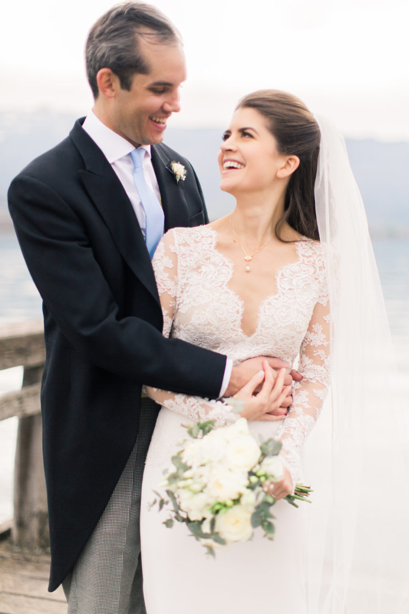
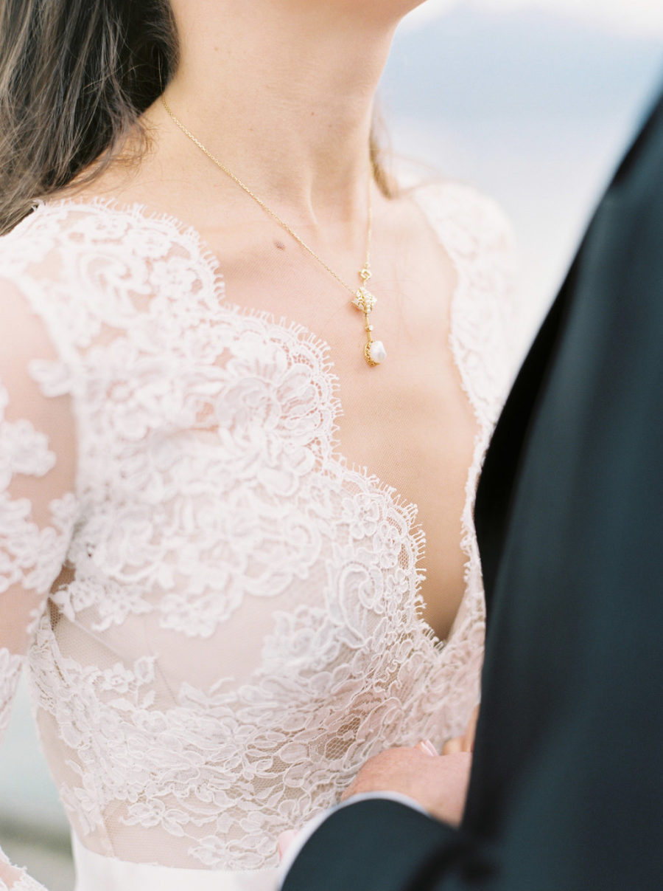
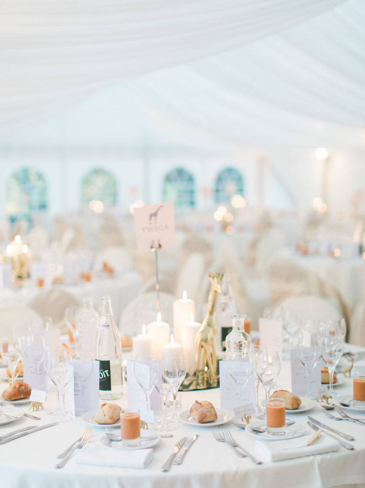
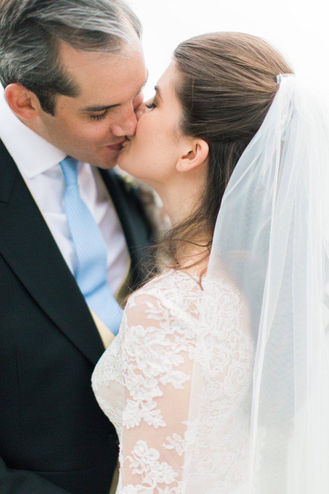
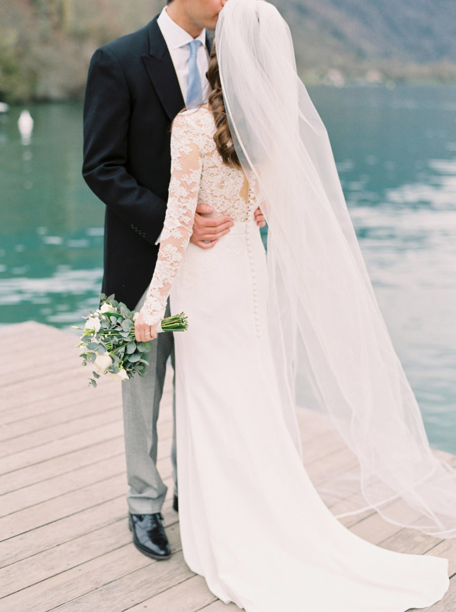
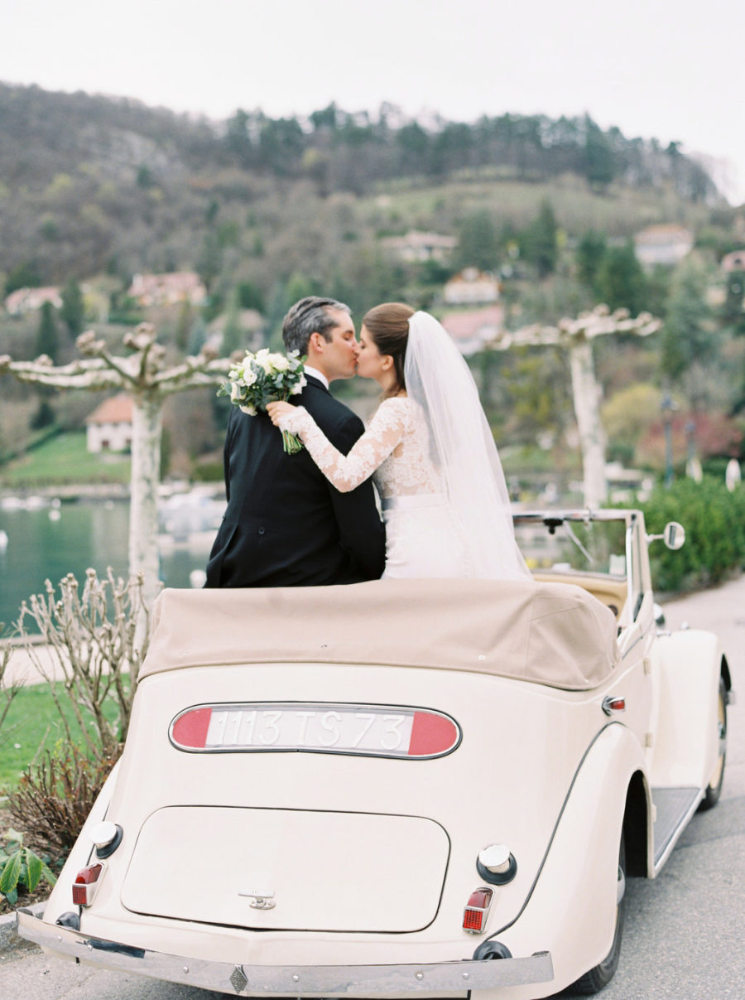
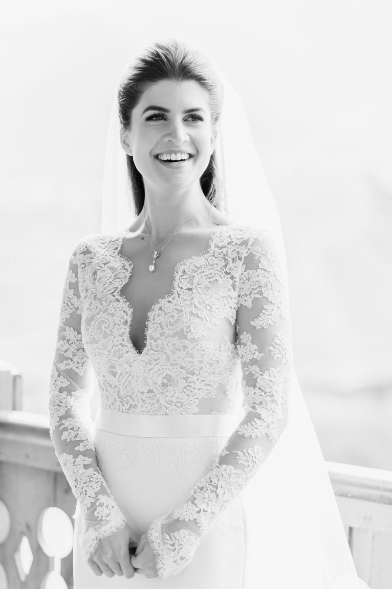
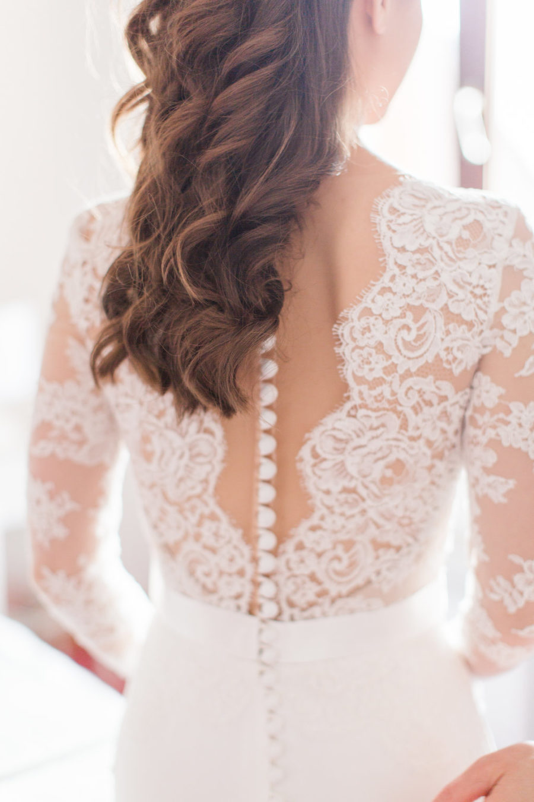
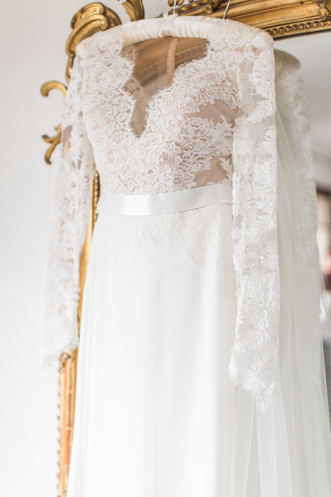
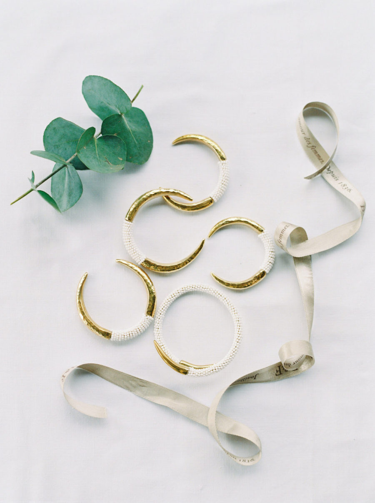
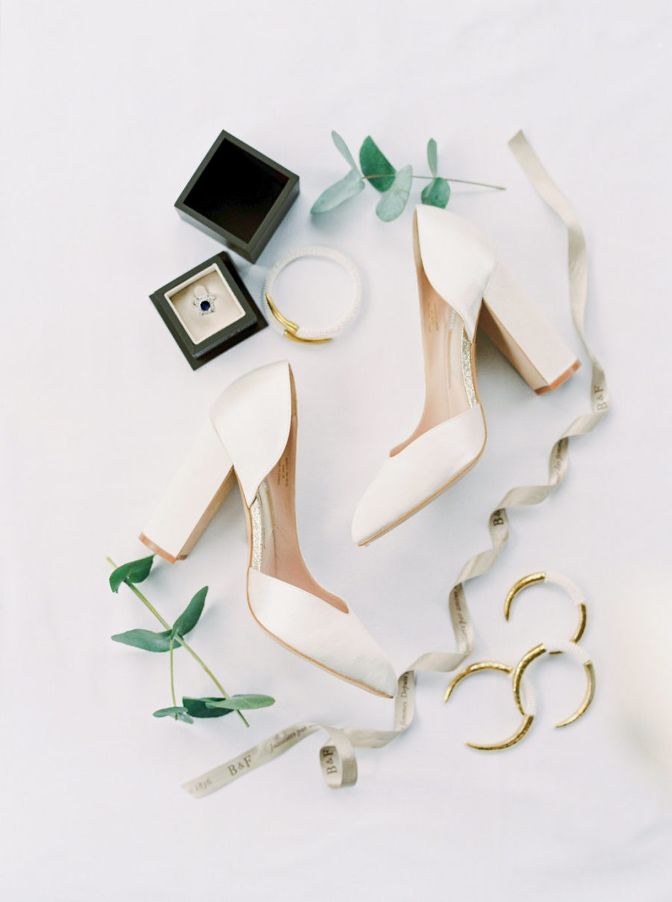